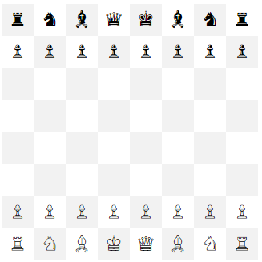

Instructions: Use combined tag and class selectors along with nth child selectors to alternate gray and white squares on this chessboard. We'll do this in stages. Keep in mind that we are styling li tags as children of two ol lists, so an li could represent a row (of the parent ol), or a square (of the child ol).
In stage 1, you give the rows with parent class "odd" a gray background, like this. In stage 2, you remove that rule, and then use nth child selector to make the squares of each alternating row gray, like this. Then, in stage three, you combine both ideas: for odd rows, you make even columns gray, and for even rows, you made odd columns gray, like this:
